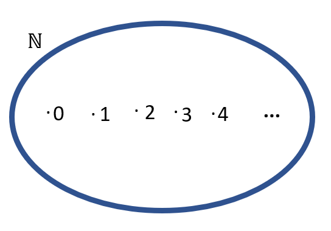
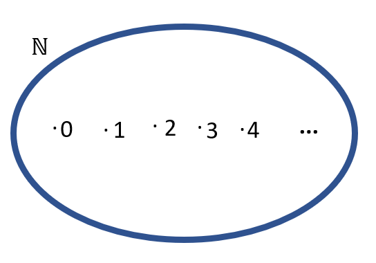

Números Naturais
Os números naturais são aqueles que usamos para contar e ordenar. Eles começam no zero e vão até o infinito: 0, 1, 2, 3, 4, 5, ...
Representamos o conjunto dos números naturais pela letra N:
N = {0, 1, 2, 3, 4, 5, ...}
Os números naturais são aqueles que usamos para contar e ordenar. Eles começam no zero e vão até o infinito: 0, 1, 2, 3, 4, 5, ...
Representamos o conjunto dos números naturais pela letra N:
N = {0, 1, 2, 3, 4, 5, ...}
